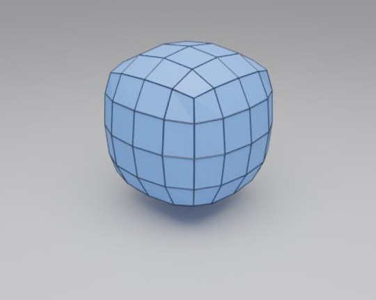

Bonus lesson
Smooth Vertices
Smooth Vertices smooths the selected vertices by averaging the angles between the faces. In Edit Mode, find it under Vertex › Smooth Vertices, or in the context menu.
1. Before
2. After Smooth Vertices

Options
- Smoothing: the smoothing factor.
- Repeat: the number of smoothing iterations.
- Axes: limit the effect to certain axes.
Tips from the manual
Using the Smooth tool after subdividing can help create a more organic shape. The Smooth modifier, which can be limited to a vertex group, is a non-destructive alternative to this operator.
Read the manual page on Smooth Vertices.
Try it
This exercise is our own suggestion and has not been run step by step in the GUI. Add a cube, enter Edit Mode, subdivide it a few times and select everything. Choose Vertex › Smooth Vertices, then raise Repeat in the panel that appears and watch the cube round off. Use Ctrl+Z to undo.